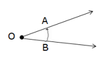
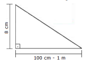
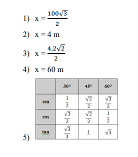

CAPÍTULO 4: INDÚTRIA DA CONSTRUÇÃO CIVIL
TRIGONOMETRIA NO TRIÂNGULO RETÂNGULO
Contextualizando
A INDÚSTRIA DA CONSTRUÇÃO CIVIL
Hoje em dia, já se percebe, tanto da parte do poder público, como da Indústria da Construção Civil e das pessoas em geral, a preocupação de facilitar a locomoção e o acesso às pessoas com deficiências físicas. Para isso, é necessário que se promovam adaptações nas ruas, nas residências, nos prédios públicos, nos transportes, proporcionando melhores condições de acessibilidade e, portanto, de vida às pessoas portadoras de necessidades especiais.
Ruas bem pavimentadas com calçadas rebaixadas e rampas de acesso são essenciais para dar acessibilidade aos cadeirantes.
Como calcular a inclinação ideal para uma rampa de acesso a cadeirantes?
(RE)CONSTRUINDO CONHECIMENTOS
Caro aluno,
Ao longo deste capítulo, explorando temas relacionados à Construção Civil, propomos o estudo das razões, das proporções e da geometria dos ângulos e dos triângulos para aprender as razões trigonométricas no triângulo retângulo. As atividades propostas a seguir vão auxiliar a responder a questão proposta no inicio do capítulo.
Observe as imagens a seguir e responda:
- Do que depende a inclinação de uma rampa?
- Em qual das duas rampas um cadeirante subiria com mais facilidade, na da esquerda ou na da direita?
 Você deve ter verificado que o cadeirante terá mais facilidade de subir na rampa da esquerda em que o ângulo mede 300, isto é, em que o ângulo tem a menor medida.
RETOMANDO PARA PROSSEGUIR...
Denominamos ângulo a região do plano limitada por duas semirretas de mesma origem. As semirretas AO e OB recebem o nome de lados do ângulo e a sua origem, o ponto O, de é o vértice do ângulo. A medida do ângulo depende da abertura de seus lados AB e a unidade usual de medida de ângulo é o grau.
VOCÊ SABIA?
Atualmente, a presença de rampas de acesso a cadeirantes é uma obrigatoriedade em todos os lugares, em edifícios, em lojas, em escolas, e há uma legislação que orienta a construção das rampas. Segundo alguns arquitetos, nas normas da construção civil, as rampas de acesso para os usuários de cadeiras de rodas devem ter, no máximo, uma inclinação de 8%, isto é 8cm em cada 100cm, o que significa que, quando se sobe uma rampa que tem um deslocamento vertical, para cada 8cm de deslocamento vertical, tem-se um afastamento de 100 cm (1m) na horizontal.
 Você agora já sabe que as rampas de acesso aos cadeirantes têm uma “medida” oficial, que define o ângulo que determina a inclinação ideal de acesso a um cadeirante e que deve ser respeitada. Observe a figura a seguir: Essa “medida” é a razão entre a variação do deslocamento na vertical (a altura da rampa) e do deslocamento na horizontal: 8/100 = 8%. Pode-se, então, relacionar a razão 8% com o ângulo ideal para a inclinação da rampa.
Você percebeu que, para definir a medida ideal de inclinação de uma rampa, é necessário conhecer alguns conceitos matemáticos como razão, proporção, porcentagem ângulo, triângulo, triângulo retângulo. h4
O QUE É RAZÃO?
Razão é uma forma de comparar duas grandezas que devem estar escritas na mesma unidade de medida.
Assim, 8cm/100cm é uma razão que compara duas grandezas escritas em centímetros e que indica que, para cada 8cm de altura, numa rampa acessível aos cadeirantes, deve haver 100cm de afastamento da parede. Vimos, ainda, que, se o denominador da fração (da razão) for 100, podemos escrevê-la na forma de porcentagem: 8/100 = 8%
PARA ENTENDER MAIS...
Propriedade fundamental das frações: uma fração não se altera se multiplicarmos ou dividirmos ambos os termos pelo mesmo número. Tendo em vista essa propriedade, para simplificar uma fração, dividimos o numerador e o denominador pelo mesmo número, encontrando uma fração equivalente, simplificada
Exemplo: 18/26 = 3/4 dividimos o numerador e denominador por 6.
A RELAÇÃO ENTRE FRAÇÃO, RAZÃO E PORCENTAGEM
Uma fração é uma divisão indicada, para transformá-la em número decimal, dividimos o numerador pelo denominador.
Exemplo: 3 ÷ 4 = 0,75 (Lê-se setenta e cinco centésimos)
Transformando esse número decimal para uma fração de denominador 100, podemos escrevêlo na forma de porcentagem.
Exemplo: 0,75 = 75/100 = 75%
Veja um exemplo de razão:
Num terraço, há uma área construída de 1200m2 e uma área livre de 3000m2. Podemos, com esses dados, definir a razão da área construída para a área livre: 1200m2 /3000m2 simplificando, temos a razão 2:5(2 para 5) que significa que, para cada 2 m2 de área construída, há 5m2 de área livre.
Dividindo 2 por 5, transformamos a razão 2:5 no número decimal, 0,4. Transformando esse número decimal em razão de denominador 100, temos 4:10, multiplicado por 10 o antecedente e o consequente, temos a razão 40:100 que pode ser escrita em forma de porcentagem 40%.
Assim, 1200m2/3000m2 = 2:5 = 0,4 = 4:10 = 40:100 = 40% que significa que, nesse terraço, a área construída é 40% da área livre
TRIGONOMETRIA NO TRIÂNGULO RETÂNGULO
O TRIÂNGULO RETÂNGULO
Para entender a declividade ideal da rampa, a que é definida por lei, utilizamos um triângulo retângulo.
Um triângulo é um polígono de três lados e três ângulos internos cuja soma de suas medidas é 1800.
O triângulo que tem um ângulo reto é chamado triângulo retângulo e seus Laos tomam nomes especiais: os lados que formam o ângulo reto são chamados catetos e o lado que se opõe ao ângulo reto é denominado hipotenusa.
Observe as figuras a seguir e verifique que os catetos de um triângulo retângulo podem ou não ter a mesma medida e que a hipotenusa é sempre o maior lado do triângulo retângulo. Na figura, observe que, independentemente da posição em que a figura se encontra, trata-se de um triângulo retângulo e os segmentos que se opõem ao ângulo reto (em vermelho nos triângulos) representam a hipotenusa.
VOCÊ SABIA?
Este símboloé de ângulo reto. Todo o triângulo que tiver um ângulo marcado com esse símbolo é um triângulo retângulo.
Agora que você revisou conceitos matemáticos, observando nas figuras acima, é fácil compreender que para calcular a inclinação ideal para uma rampa de acesso aos cadeirantes, basta calcular uma inclinação de 8%, isto é, para cada 8cm de altura, deve haver 100cm de afastamento.
VOCÊ JÁ PENSOU ISSO?
Quando a altura do percurso é muito extensa, o afastamento é muito grande. Como a construção civil, resolve essa questão, otimizando os espaços?
Estudando Trigonometria no triângulo retângulo
A razão 8/100 que indica o ângulo que a rampa deve ter para proporcionar acesso aos cadeirantes é chamada pelos matemáticos de tangente do ângulo.
A parte da Matemática que estuda as relações dos lados do triângulo retângulo, definindo os seus ângulos agudos é a Trigonometria no Triângulo Retângulo. Para estabelecer essas relações, nos triângulos retângulos, os catetos recebem denominações especiais em relação aos ângulos agudos.
Observe a figura a seguir, você pode verificar que, em relação ao ângulo A, o cateto a é denominado cateto oposto e o cateto b é o cateto adjacente. Em relação ao ângulo C, o cateto a é denominado cateto adjacente e o cateto b é o cateto oposto.
Vamos definir três diferentes relações (razões) para em relação a cada ângulo agudo, A e C nomeando-as.
Em relação ao ângulo A:
- a tangente de A, relaciona o cateto oposto a A com o cateto adjacente a A e o símbolo é tagA;
- o seno de A relaciona o cateto oposto a A com a hipotenusa do triângulo retângulo e o símbolo é senA;
- o cosseno de A relaciona o cateto adjacente a A com a hipotenusa do triângulo retângulo e o símbolo é cosA;
Em relação ao ângulo C:
- a tangente de C, relaciona o cateto oposto a C com o cateto adjacente a C e o símbolo é tagC;
- o seno de C relaciona o cateto oposto a C com a hipotenusa do triângulo retângulo e o símbolo é senC;
- o cosseno de C relaciona o cateto adjacente a C com a hipotenusa do triângulo ângulo e o símbolo é cosC;
Resumindo e simbolizando temos:
Os matemáticos criaram as chamadas razões trigonométricas (seno, cosseno e tangente) para poder calcular distâncias impossíveis de serem medidas com régua, com trena ou qualquer instrumento que sirva para medir comprimentos. Eles tinham que ter pelo menos um ângulo agudo e um lado do triângulo retângulo, os mesmos dados que, na construção civil, deve-se ter para definir a declividade (o ângulo) da rampa ideal para os cadeirantes.
O cálculo da medida do ângulo é feito através do teodolito e um dos lados do triângulo, devese poder medir e, com a medida do ângulo e a tabela de senos, cossenos e tangentes, pode-se obter quaisquer razões.
O Teodolito é um instrumento de precisão óptico utilizado para medir ângulos verticais e horizontais, aplicado em diversos setores como a navegação, a construção civil, a agricultura e a meteorologia.
Acesse o vídeo clicando no link a seguir:
Veja algumas aplicações das razões trigonométricas
Uma torre iluminada pelo sol projeta uma sombra de 30 m quando os raios do sol incidem sobre ela num ângulo de 30º. Qual é altura dessa torre?
Não precisaremos mais fincar uma ripa no solo e medir sua sombra. Iremos utilizar as relações trigonométricas.
Para nossos cálculos vamos considerar o triângulo ABC, formado pela altura da torre e pela sombra por ela projetada. O cateto a, que corresponde à sombra da torre, mede 30 m e é o cateto oposto. O cateto b, que corresponde à altura da torre, é o cateto adjacente do ângulo de 30º é o valor que queremos calcular.
Conhecemos o valor do ângulo A formado pelos raios do sol incidindo sobre a torre, que vale 30º e o a cateto oposto a ele, que mede 30 m. Vamos usar a razão:
Podemos consultar os valores de seno, cosseno e tangente dos chamados ângulos notáveis (300, 450 e 600) em uma tabela como a que segue, para substituir na razão da tangente os valores que temos para calcular o valor da altura da torre.
Sabemos, então, que:
Desenvolvendo algebricamente essa igualdade, vamos encontrar a medida procurada.
Obs.: Utilizamos a relação de tangente, pois sabíamos a medida de um dos catetos e procurávamos a medida do outro cateto. Temos por fim a altura da torre que é igual a 30√3
RETOMANDO UM CONCEITO:
Racionalizar denominadores é o processo de tornar um denominador irracional em um número racional, encontrando uma fração equivalente, multiplicando o numerado e o denominador da fração pelo mesmo número.
Exemplo:
PRATICANDO... AÇÃO E REFLEXÃO
Para resolver os problemas de trigonometria, faça um desenho com os dados do problema e, quando necessário, consulte a tabela de razões trigonométricas de ângulos notáveis para resolvê-lo.
- 1) Para determinar a altura de um edifício, um topógrafo coloca o teodolito a 100 m da sua base e obtém um ângulo de 30°. Sabendo que a luneta do teodolito está a 1,70 m do solo, qual é aproximadamente a altura da torre?
- 2) Queremos encostar uma escada de 8m de comprimento numa parede, de modo que forme um ângulo de 60° com o solo. A que distância da parede devemos apoiar a escada no solo?
- 3) Uma escada de 4,20m de extensão tem 15 degraus e forma com o solo um ângulo de 45º. Qual é a altura da escada?
-
4) Um cabo foi colocado a uma distância de 51 metros de uma torre de energia elétrica. Se o
ângulo que o cabo faz com o chão é de 32°, qual é o comprimento do cabo? (Utilize:
sen32°=0,53, cos32°=0,85, tg 32°=0,62) sem 32°=0,53, cos32°=0,85, tg 32°=0,62).
5) Para resolver problemas utilizando as razões trigonométricas, usamos uma tabela de
razões trigonométricas de ângulos notáveis (30°, 45° e 60°).
Complete a tabela a seguir, consultando a seção “Você sabia?”.
- 6) A partir do estudo feito neste capítulo, preencha as lacunas com as seguintes palavras: triângulo retângulo, hipotenusa, reto, razão, seno, agudo, cosseno, ângulo.
O QUE APRENDI
Para possibilitar a acessibilidade, foram criadas leis que regulamentam, inclusive, a declividade das rampas que facilitam o acesso a cadeirantes. Essa declividade é dada pela tangente do ângulo que a rampa forma com o solo e é definida pela altura do acesso. Nesse capítulo, estudamos a trigonometria no triângulo retângulo, suas propriedades, as razões trigonométricas e suas aplicações em diferentes contextos da realidade.
RESPOSTAS DOS EXERCÍCIOS DA SEÇÃO: PRATICANDO... AÇÃO REFLEXÃO
